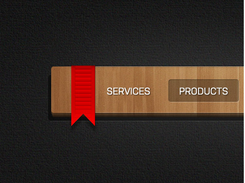

Nav bar
This nav bar will allow access to the rest of the page have. It should be a UL with LI elements
- Make ul and place img inside width 90%, height 100px
- Make li, add inline block float left color white, padding to left and right, add width of 60px font 1.1em
- Input field text style boarder 2px top and bottom 1 to sides dark color top and left lighter bottom and right, to appear as indent
- Add button with background img and move left-22px. Position relative
- Hover to li thinking darker boarder with transparent center